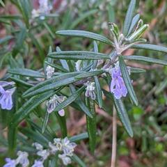

Learn · lesson0001020304050607
Lesson 0 · three toys · eight minutes
Most software follows rules that somebody wrote down. The networks in the lab notebooks have none. Nobody told the Pilot how to fly, and nobody told the Owl what a rose is. This lesson is about why anyone would build a machine that way, and what learning means when a machine does it.
You need: nothingYou leave with: model, weights, examples, training
01 · The rule you cannot write
Rosemary and lavender are both gray-green shrubs with needle leaves, sold side by side at the garden store. Try ten photos. Someone who gardens (or loves fresh herbs) will do well. If that isn't you, use the exercise become more familiar with the differences. Then try to write down the rules you used or learned. Can you write a set of rules clearly enough that a computer could follow them?
"Lavender has purple flowers" fails on every photo taken out of bloom. "Rosemary has shorter needles" needs a ruler, and a definition of a needle. Each rule you write grows exceptions, and the exceptions grow their own. For about fifty years people tried to program sight rule by rule, and it never worked well. You know something you cannot say.

Photo 1 of 10
Rosemary or lavender. These are ten real photos, five of each, from the Owl's notebook. The people who took them gave them to the public domain through iNaturalist.
02 · Knobs
Here is the other way: Give up on writing the rule. Build a machine whose behavior depends on a few numbers (knobs) that you can adjust, and collect examples where you already know the right answer. Then turn the knobs until the machine gets the examples right.
Below, every dot is one photo. A network that has looked at 142 million photographs boiled each photo down to a list of numbers, and the dot's position comes from that list. (How it does that is the subject of lesson 6. For now, treat them as two measurements, like height and weight.) The machine is a straight line. Photos on one side it calls rosemary, and on the other, lavender. It has two knobs.
You are the learning. Turn TILT and SLIDE until as few dots as you can manage wear a red ring. Click a dot to see the photo behind it. The best any straight line can do here is 61 of 63.
03 · Learning
What you just did has a recipe. Look at the mistakes, turn each knob a little in the direction that shrinks them, and repeat. A machine can follow that recipe by itself, and when it does we say it is learning, or being trained. The knobs are called weights or parameters. The machine with its knobs is a model. The photos with known answers are the training examples.
Nobody typed in a rule about needles or flowers. The rule is wherever the knobs stopped.
Hands off. The line starts somewhere random. LEARN takes sixty small steps, and each one looks at all 63 photos and nudges the line. It settles near 59 of 63, a little short of the best line you could find by hand, because it chases a smoother measure of wrongness than a count of red rings. Lesson 3 is about that measure.
04 · Scale
A line with two knobs can separate two herbs most of the time. The networks in the lab notebooks are this idea grown up: more knobs, arranged in layers, turned by the same kind of small steps.
There is a price. A machine that learns does what its examples and its score reward, and that is sometimes different from what you meant. The Pilot learned to cheat before it learned to fight.
The next lesson looks inside the machine: what a knob is, and what the numbers do on their way through.
Each of those three has a lab notebook that tells how it was built, cheating included. They read more easily after the first few lessons, and the lessons will point you to them when it is time.
05 · If you remember four things
"Some things you can do and cannot explain."
"A model is a machine with knobs."
"Training is turning the knobs to fit examples."
"The rule is wherever the knobs stopped."